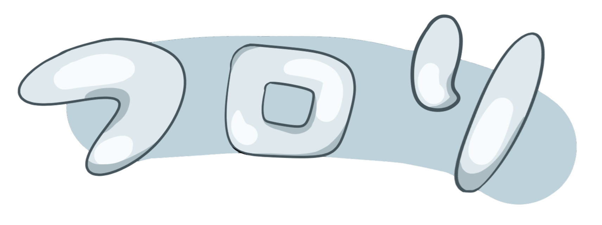
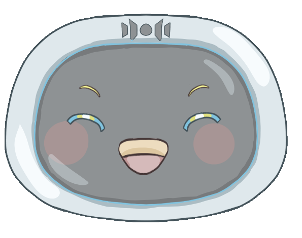

ひらめきクイズ
画面をタッチして スタート!

ヤア! ボクはフロリだヨ!
これで いいカナ?
🎁 頑張った ご褒美が 着せ替えに なるヨ!
制限時間を付けて遊ぶと ご褒美の星 ⭐ がもらえるヨ。いま ⭐ 0個
🥚 ランク たまご一覧
音は0にすると出なくなるよ。
🥁 けっかは…?
新記録!
問題を読み込めなかったよ。ページを開き直してね。
ここでやめる?この回の結果は残らないよ。
ヒントを 見ると この問題の 点が 半分に なっちゃうヨ。それでも 見るカナ?
答えを見ますか?この問題は 不正解になります。
制限時間を付ける?付けると1問30秒で答えるヨ。星のご褒美がもらえるヨ。
🔄 リセットすると 木の配置が 新しく変わります。いまの育ち具合は なくなります。
セーブデータを消します。成績・問題図鑑・着せ替え・続きが全部消えるけど 本当にいいですか?
カードを押すと もどるヨ
ノートを押すと もどるヨ
ヒントなしで正解=満点、ヒントあり=半分。10点ごとに ランクアップ!かくしステージは、
設定:音の大きさ
わあ すごいね! よく見つけたネ!特別なオニ問題が 10問 続けて 出るヨ。全部 解けるかな? 挑戦する?